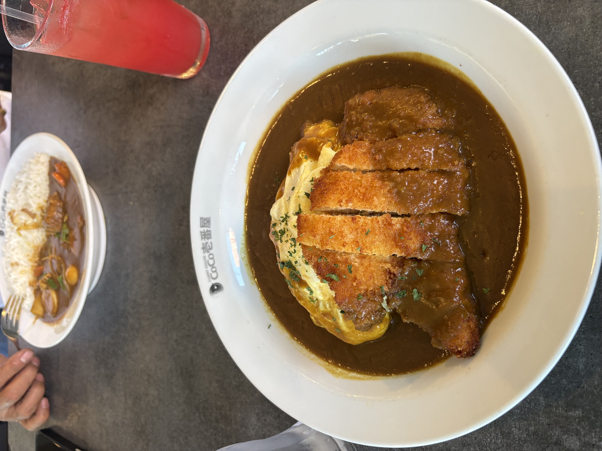
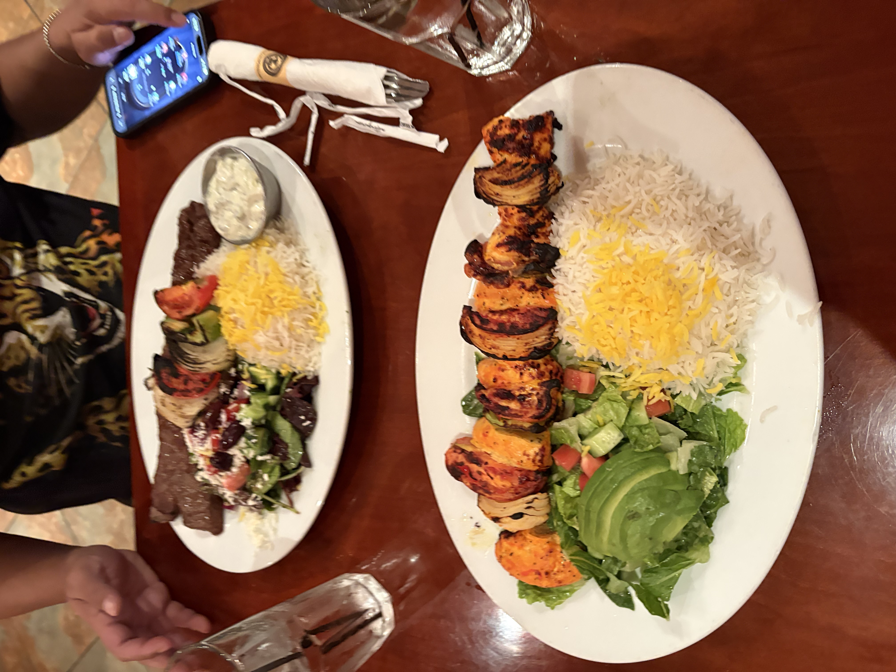
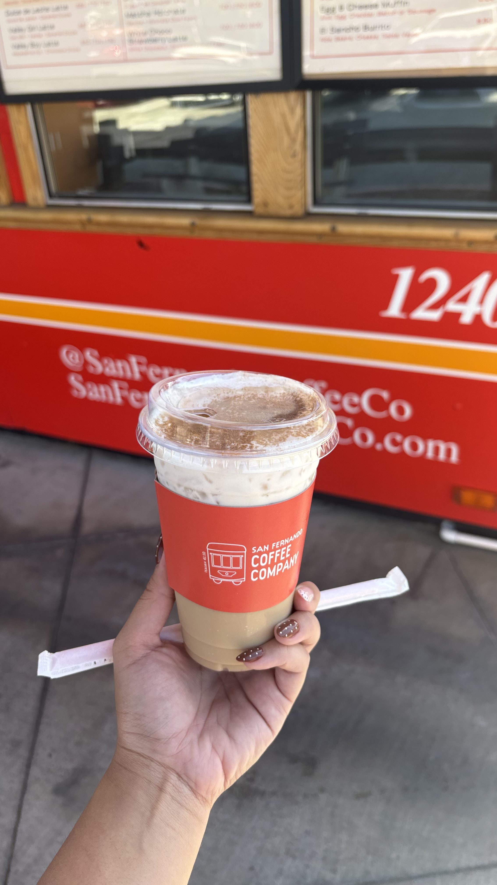

My Food Finds
Food is a big part of my adventures. Some of these places have become longtime favorites, while others are local finds that I love going back to. Here are three of my favorites!
Coco Ichibanya Curry

My Rating: ★★★★★
Coco Ichibanya has become one of my all-time favorite comfort foods. My best friend introduced it to me years ago, and funny enough, I didn't even like the curry at first. I used to order the curry sauce separately because I wasn't sure about it.
Years later, I somehow ended up craving it almost every month! When I met my boyfriend, I introduced him to it and was surprised that he loved it just as much as I did. Whenever we have time, getting Coco Ichibanya has become one of our little bonding traditions.
Panini Kabob Grill

My Rating: ★★★★★
Panini Kabob Grill is one of my favorites because the food tastes fresh and flavorful without leaving me feeling overly full, greasy, or bloated. That's something I really appreciate about Mediterranean food.
I can get a filling meal with plenty of grilled protein while still feeling good afterward. Panini Kabob Grill does it so well, and I especially love the flavor you get from their grilled food.
San Fernando Coffee Company

My Rating: ★★★★
Living in the San Fernando Valley, I love having a local coffee shop that gives me an alternative to the usual Starbucks run. San Fernando Coffee Company has drinks inspired by Mexican flavors, which makes it stand out to me.
Horchata is one of my favorite flavors, and I love how they incorporate it into their drinks. I definitely recommend trying it! The drinks can be a little pricey, but coffee drinks in general have gotten expensive, so I still enjoy coming here when I want something different.